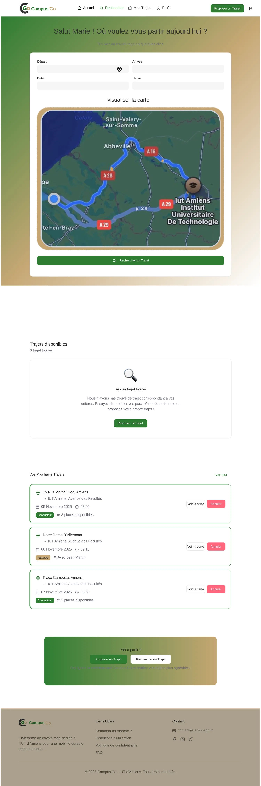
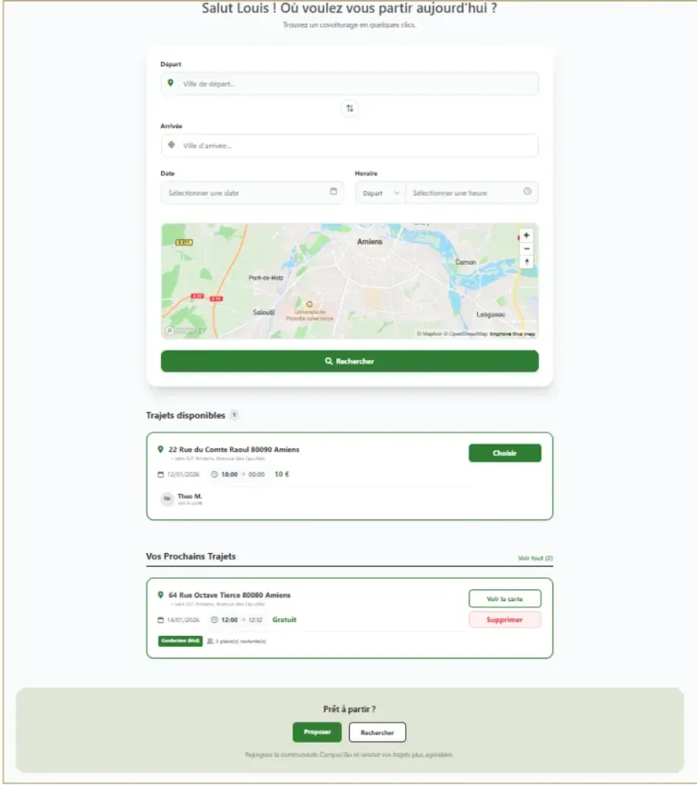
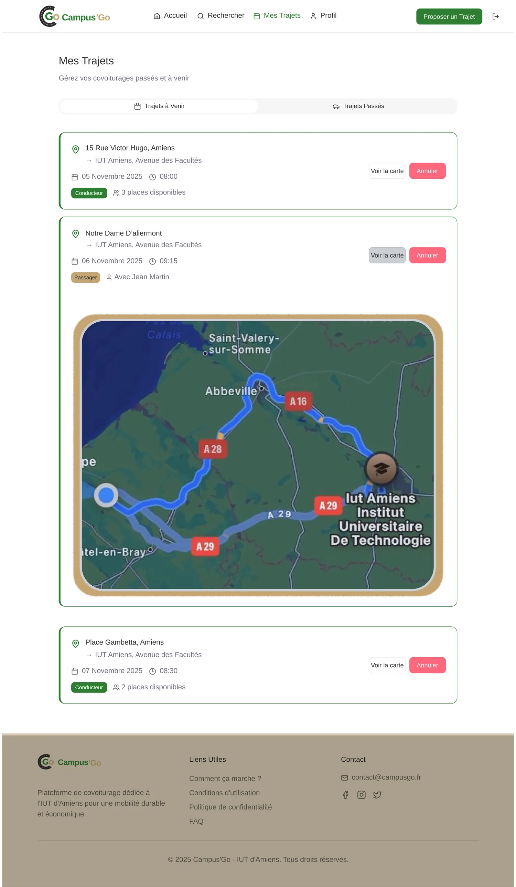
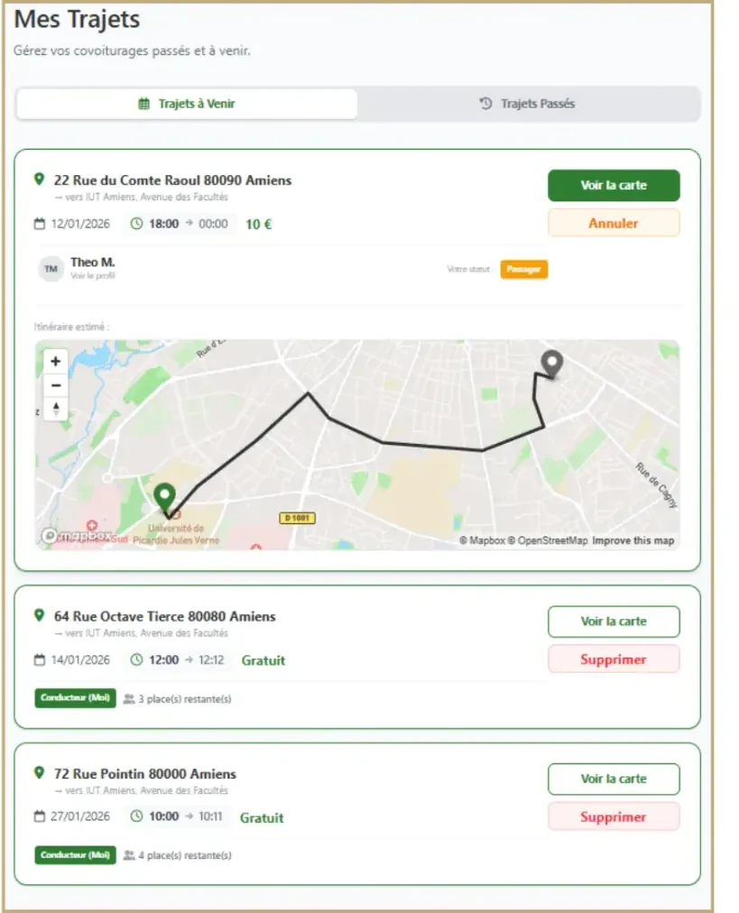
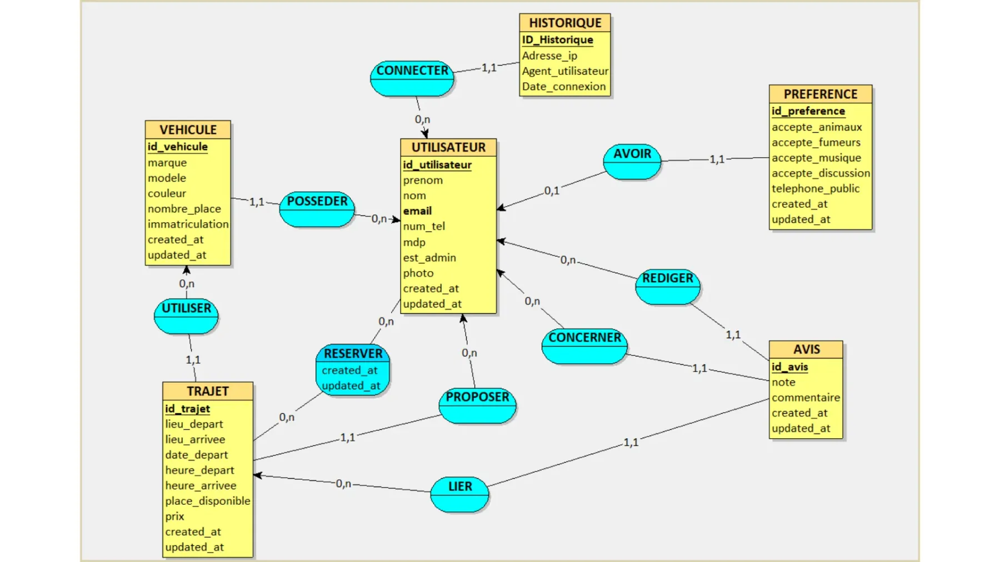
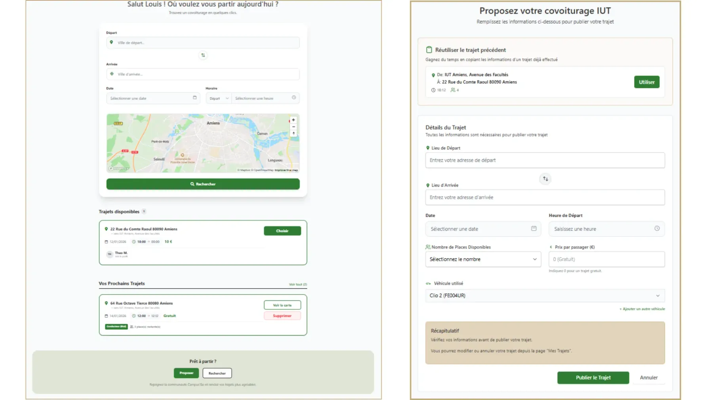
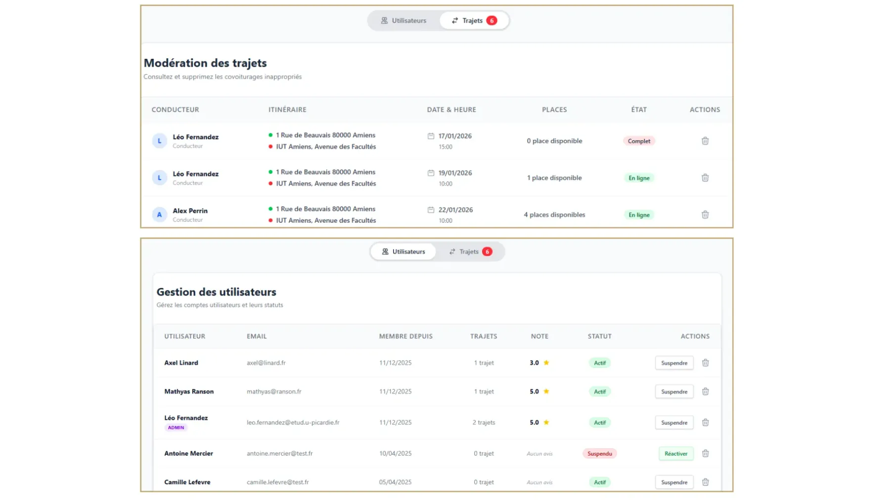
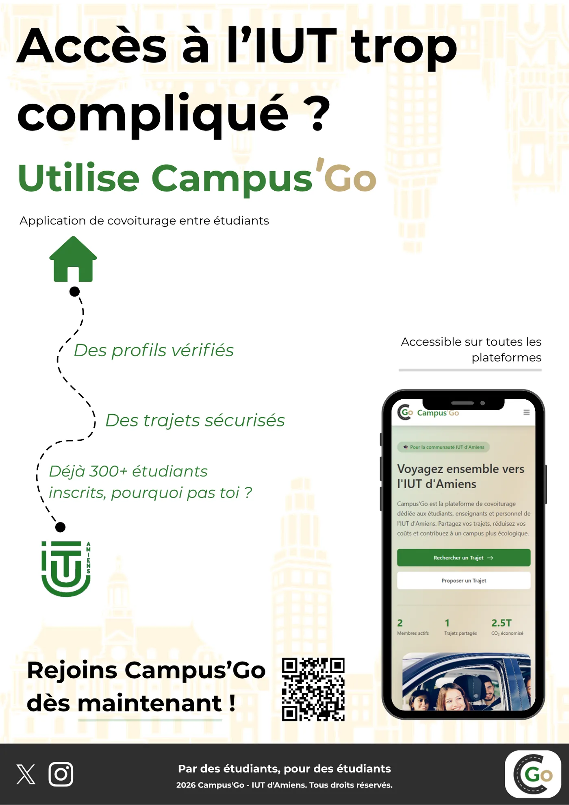
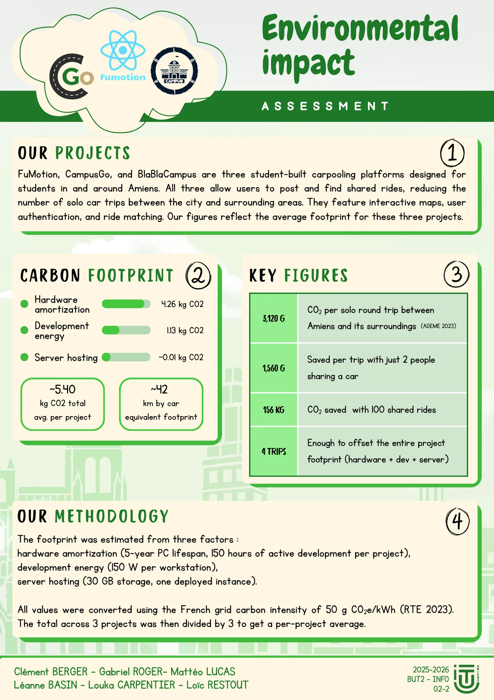

01 La Genèse de l'Histoire
L'histoire de Campus'Go commence par un constat simple et quotidien : observer les parkings de l'IUT d'Amiens saturés de voitures ne contenant souvent qu'une seule personne. Face à l'augmentation du coût de la vie étudiante et à l'urgence climatique, mon équipe et moi-même nous sommes lancés un défi : comment recréer du lien social tout en proposant une solution de mobilité concrète et locale ?
Il ne s'agissait pas de recoder un simple "BlaBlaCar", mais de penser à notre échelle. Nous voulions créer un espace de confiance exclusif, sans commission, fait par des étudiants, pour des étudiants. C'est ainsi qu'est né le projet Campus'Go, une aventure humaine et technique de plusieurs mois.
Mon rôle dans l'équipe : j'ai réalisé la recherche de trajets ainsi que les pages « trajets à venir » et « trajets passés » côté utilisateur. J'ai également repris des morceaux de pages tenues par d'autres membres du groupe, au fil des blocages.

02 De la maquette à l'écran livré
Avant la première ligne de code, nous avons rédigé un cahier des charges : les besoins, les trois rôles (conducteur, passager, administrateur), les scénarios d'usage détaillés, puis onze maquettes sous Figma. La charte était posée dès ce document : beige et vert, pour un service à la fois étudiant et écologique.
Voici mis face à face les deux écrans dont j'avais la charge. Les images sont cadrées sur le haut de page. Cliquez pour voir l'écran entier.


Recherche de trajet. La structure de la maquette a tenu : formulaire, carte, résultats en dessous. Ce qui s'est ajouté à l'intégration, c'est tout ce qu'un écran vide ne laisse pas voir : un bouton d'inversion départ/arrivée, le choix entre heure de départ et heure d'arrivée, un rappel des prochains trajets réservés, et une relance en bas de page quand la recherche ne donne rien.


Mes trajets à venir. C'est ici que l'écart est le plus net, et il porte entièrement sur les états. La maquette montrait des trajets ; l'écran livré doit dire si vous êtes conducteur ou passager, afficher le prix et les places restantes, et proposer « Annuler » à celui qui a réservé mais « Supprimer » à celui qui a publié. Un second onglet, absent de la maquette d'origine, gère l'historique et la notation.
Deux enseignements de cette confrontation. Le premier : la charte posée dans le cahier des charges a survécu jusqu'à la mise en ligne, à cinq et sans direction artistique. C'est la preuve qu'un document de cadrage sert vraiment à quelque chose. Le second : les écarts entre maquette et écran livré ne viennent presque jamais de la mise en page. Ils viennent des états qu'on n'avait pas pensé à dessiner.
03 Architecture & Base de données
Pour garantir la robustesse et la maintenabilité du projet, nous avons opté pour le framework Laravel (architecture MVC) couplé à une base de données MySQL. L'interface a été stylisée avec Tailwind CSS pour assurer un design responsive et moderne, respectant notre charte graphique (Beige et Vert nature).
- Modélisation stricte : Entités Utilisateur, Véhicule, Trajet, Avis, et Préférences.
- Sécurité : Hashage des mots de passe, requêtes préparées (protection anti-injections SQL) et respect du RGPD.

04 Les Fonctionnalités Clés

Recherche et Proposition
Les conducteurs peuvent publier un trajet en précisant l'heure, le véhicule et le nombre de places. Les passagers disposent d'un moteur de recherche avec filtres pour trouver le trajet qui correspond à leurs horaires.

Dashboard Personnalisé
Chaque utilisateur dispose d'un espace pour suivre ses réservations (passées et à venir), consulter l'historique de ses trajets et gérer ses annulations.

Profil et Véhicules
L'utilisateur peut enregistrer plusieurs véhicules et définir ses préférences de voyage (musique, discussion, tolérance au tabac ou animaux) pour un covoiturage optimal.

Système d'Avis & Modération
Un système de notation réciproque garantit la confiance. Les comptes ayant des droits d'administration peuvent modérer les trajets et superviser la plateforme.
05 Faire connaître le service
Un service de covoiturage ne vaut rien sans utilisateurs : il fallait donc aussi savoir le vendre. Nous avons produit une affiche A3 pour l'IUT, qui part d'une question plutôt que d'une présentation, « Accès à l'IUT trop compliqué ? », et déroule le trajet domicile-campus en trois arguments, jusqu'au QR code.

Au semestre suivant, un autre exercice nous demandait de mesurer l'empreinte écologique d'une SAÉ et de la présenter en anglais. Nous avons été regroupés avec des étudiants qui avaient mené leurs propres plateformes de covoiturage, FuMotion et BlaBlaCampus. Plutôt que de les mettre en concurrence, nous avons fusionné les trois projets en un seul jeu de mesures : amortissement du matériel, énergie de développement et hébergement, convertis avec l'intensité carbone du réseau français, puis moyennés sur les trois.
Le résultat vaut mieux que n'importe quel argument marketing : quatre trajets partagés suffisent à compenser l'empreinte complète du projet.

06 Les Obstacles Surmontés et le Lien avec mon BUT
Comme dans tout projet d'envergure, le chemin n'a pas été linéaire. Notre premier grand obstacle a été l'apprentissage "sur le tas" du framework Laravel. Il a fallu repenser notre façon de coder, passer d'un PHP procédural à une architecture MVC stricte. Humainement, coordonner 5 développeurs avec des niveaux différents a exigé une grande capacité d'adaptation. Nous avons dû apprendre à gérer nos frustrations lors de conflits de fusion sur Git (merge conflicts) et mettre en place une communication quotidienne.
La leçon la plus utile est venue de la soutenance. Nous relisions mutuellement nos pages, chacun celles des autres. Et malgré ça, c'est le professeur qui a trouvé la faille en quelques minutes : notre inscription se contentait des huit caractères minimum, sans exiger ni majuscule, ni chiffre, ni caractère spécial, là où n'importe quel site en impose aujourd'hui. Le plus gênant, c'est que nous avions rendu le semestre précédent un rapport de huit pages sur le stockage des mots de passe : hachage, salage, poivrage. Nous avions bien haché les nôtres en base, mais personne n'avait pensé à la règle qui protège l'utilisateur en amont. Depuis, je considère qu'une relecture entre gens qui ont écrit le code ne remplace pas un regard extérieur.
Compétences validées
- Réaliser (Développer des applications) : Passage de la conception (maquettes) à la réalisation technique complète avec Laravel et MySQL.
- Collaborer (Travailler dans une équipe informatique) : Utilisation de Git, répartition des tâches, communication et entraide pour surmonter les blocages techniques.
- Optimiser : Sécurisation des requêtes SQL et structuration de la base de données pour une application fluide.